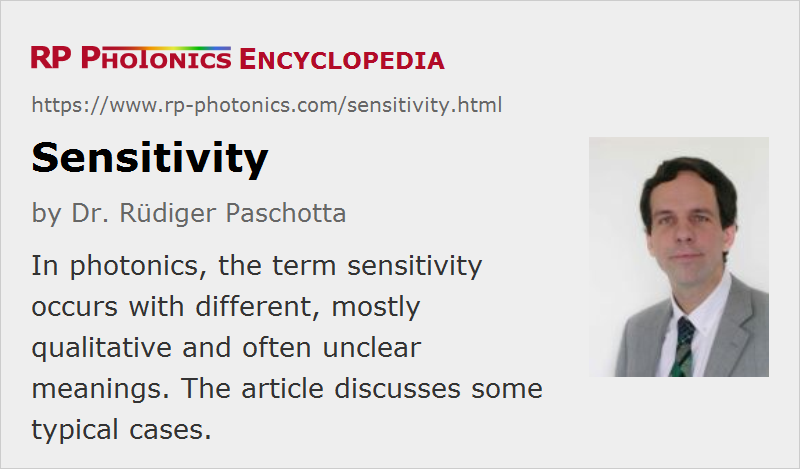

Sensitivity
Definition: (different meanings, depending on the context)
German: Sensitivität, Empfindlichkeit
Categories: light detection and characterization, fluctuations and noise
How to cite the article; suggest additional literature
Author: Dr. Rüdiger Paschotta
The term sensitivity is used quite frequently in the area of photonics, and this with different meanings – mostly with qualitative ones. Some cases are discussed in the following sections.
Sensitivity of Photodetectors
Most frequently, the term is used in the context of photodetectors such as photodiodes and photomultipliers, but often without a clearly defined qualitative or even quantitative meaning.
In some cases, what is meant is actually the responsivity of a detector. This is essentially the ratio of output signal (e.g. a photocurrent) and the strength of the optical input (as an optical power).
In other cases, sensitivity is understood as the ability to detect weak signals. That a ability is usually limited by detector noise. A quantitative measure for that aspect is the noise-equivalent power, which is essentially the optical input required to obtain the same output signal strength is that which results from detector noise. A related quantity – just the inverse of the noise-equivalent power – is the detectivity.
Note that by adding an electronic amplifier to the output of a photodetector one can effectively increase the responsivity, but not the detectivity. Similarly, some photodetectors have particularly higher responsivity, while others have a higher detectivity.
In case of the human eye, there is no clearly defined output signal, nor a well defined noise level, but sensitivity can again mean the ability to detect weak light signals. One may say, for example, that the human eye is more sensitive to green light than to red or blue light.
Sensitivity of Devices to Certain Parameters
Frequently, the term sensitivity is used in the discussion of how certain devices react to disturbing influences such as changes of temperature, humidity, mechanical influences like vibrations or bending, input wavelengths, signal powers, back reflections etc. The wise designs may be optimized to minimize unwanted sensitivities.
In the context of optical resonators, the alignment sensitivity is often of interest. It essentially quantifies how much the position of resonator modes shift as a result of misalignments. That depends substantially on the chosen resonator design.
Questions and Comments from Users
Here you can submit questions and comments. As far as they get accepted by the author, they will appear above this paragraph together with the author’s answer. The author will decide on acceptance based on certain criteria. Essentially, the issue must be of sufficiently broad interest.
Please do not enter personal data here; we would otherwise delete it soon. (See also our privacy declaration.) If you wish to receive personal feedback or consultancy from the author, please contact him e.g. via e-mail.
By submitting the information, you give your consent to the potential publication of your inputs on our website according to our rules. (If you later retract your consent, we will delete those inputs.) As your inputs are first reviewed by the author, they may be published with some delay.
See also: responsivity, noise-equivalent power, detectivity, alignment sensitivity of optical resonators
and other articles in the categories light detection and characterization, fluctuations and noise
|  |
If you like this page, please share the link with your friends and colleagues, e.g. via social media:
These sharing buttons are implemented in a privacy-friendly way!